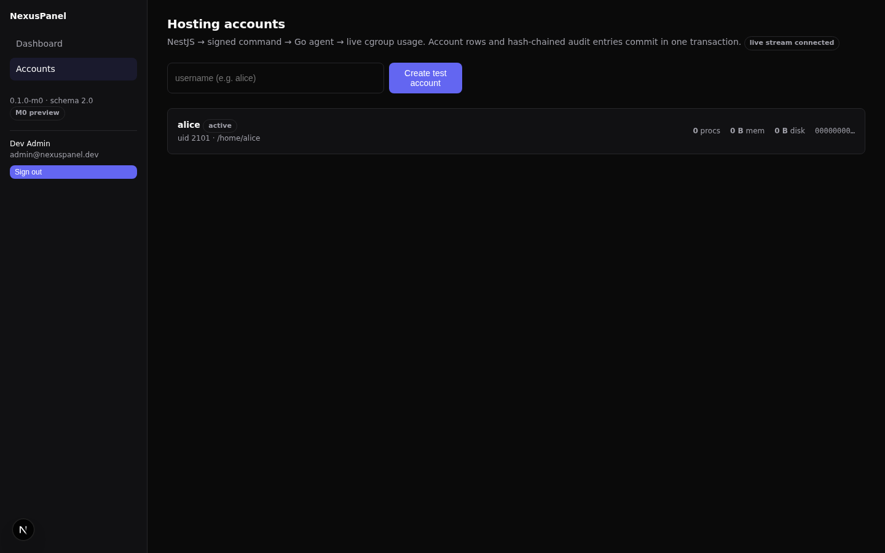

Your first hosting account
A hosting account is an isolated OS identity on a managed node. You create it from the UI; the panel never touches the server itself — a signed command tells the privileged agent to do the OS work.
Create the account
- Open Accounts and click Create account.
- Enter a username. The policy is strict by design:
^[a-z][a-z0-9-]{0,31}$— lowercase letters, digits and hyphens, starting with a letter, at most 32 characters. Reserved system names (root,www-data,postgres,nexusagent, …) are rejected before anything reaches the server. - Submit. The account appears in the list with status active and its assigned UID.

What happens under the hood
Submitting the form triggers a chain of verifiable steps — none of them optional, all of them audited:
- The control plane validates your permission
(
account:create) and the username policy. - It sends
account.createandisolation.provisionas JSON-RPC commands signed with the control plane's Ed25519 key over the agent's Unix socket. Each command carries a 30-second validity window; the agent rejects unsigned, tampered or expired commands. - The agent verifies the signature, creates the Linux user with a
fixed binary invocation (
useradd, home directory, no login shell) — never a shell script — and creates the account's cgroup v2 slice (/sys/fs/cgroup/nexuspanel/<username>) used for resource accounting and, later, limits. - The agent returns the assigned UID/GID and home directory; the control plane stores them with the account row.
- Control plane and agent each append a hash-chained audit entry for the operation.
Live usage
The usage card on the account list is not a page reload — the server
samples the account's cgroup counters (CPU time, memory, process count)
through the agent's read-only account.usage command and
pushes updates to your browser over an authenticated WebSocket
(/events). While your session is open, numbers move on
their own.
Suspend, resume, delete
| Action | What the agent does | What you see |
|---|---|---|
| Suspend | Disables password login for the OS user | Status suspended, action audited |
| Resume | Re-enables password login | Status active, action audited |
| Delete | Removes the OS user (files preserved), tears down the cgroup slice | Row disappears from the list (soft-deleted), action audited |
If the agent is unreachable, account mutations fail closed: the panel
shows an error and the failure is written to the audit chain. Reads
(usage) keep working from the agent's local state.